话就不多说，让我们开始故事，话说自上古时代，盘古开天辟地，浑沌破晓，阴阳之分从此出来，而我掌控扶摇九千万里的阴神（渗透），不知多少个量劫过去，浑浑噩噩的阳神（入侵分析）也随着时间的推移，慢慢诞生了灵智。
我是一块小石头，在佛道之争过程，终于修炼成人形，我没有荣幸在龙汉初劫中诞生，见识到那时的百家争鸣，我现在只能将前人的风光说给后人听，顺便吹一下自己修炼故事。
我根据虚拟老祖的教学玉筒，虚拟了一片小世界，在这片世界中，我可以虚拟出多个自己，对这些虚拟自己进行攻击练习。
不过要进入要这片世界，就需要找到密钥才能开启
git clone https://github.com/yingshang/yinyang.git
如果找到了密钥，这还不够，因为你还需要docker仙女和python老哥彻彻底底融合才能进行演化天地
apt install docker.io python3-pip
pip3 install docker-compose
pip3 install -r requirements.txt
python3 manage.py runserver现在就让你们见识一下我演练的天地
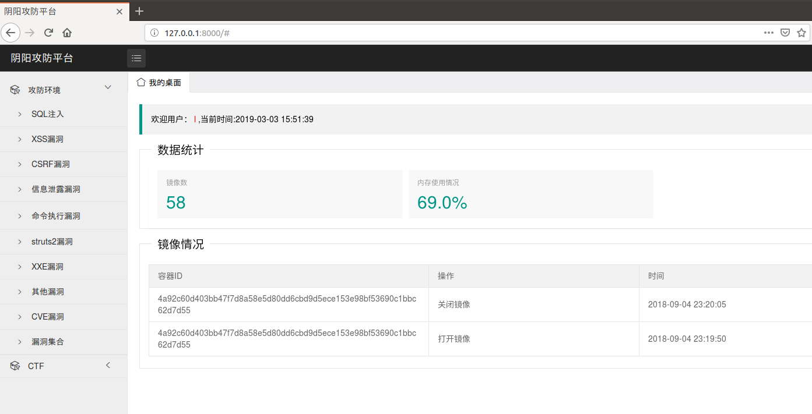上面只是演示界面，还有很多需要配置
首先，你需要打开docker仙女的内心世界（REST API），测试发现Ubuntu系统大大能够正常打开API，centos就不能，乖，不要做妖怪成杠精哈，我用试了几种方法开启方法都不行，就用Ubuntu，一试就行。
edit /lib/systemd/system/docker.service
ExecStart=/usr/bin/dockerd -H fd:// -H=tcp://0.0.0.0:5555
systemctl daemon-reload
service docker restart
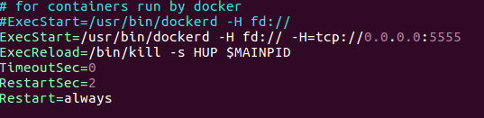好了，成功打开了API
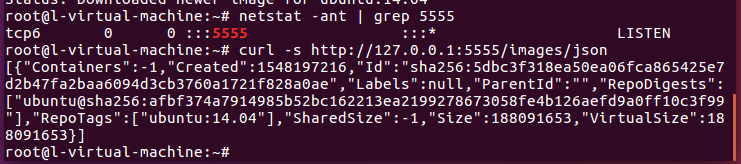
我在目录新建了两个目录，一个是装docker-compose.xml，一个是对应镜像的课程（我当时用dockerfile，但是觉得放到github那边容量太大了，干脆直接push上docker hub，再用docker-compose进行下载），课程的展示我是使用markdown进行解析，因为写教程都是本地写，不是web写，就没打算弄一个编辑器（不过说不定以后会弄。。。）
首先，新的系统没有镜像，需要打开/pull进行下载镜像，我做成了全部下载所有的镜像，也就是docker目录里面的镜像，如果你不想全部下载的，只需要把docker目录的docker-compose.xml删除就行
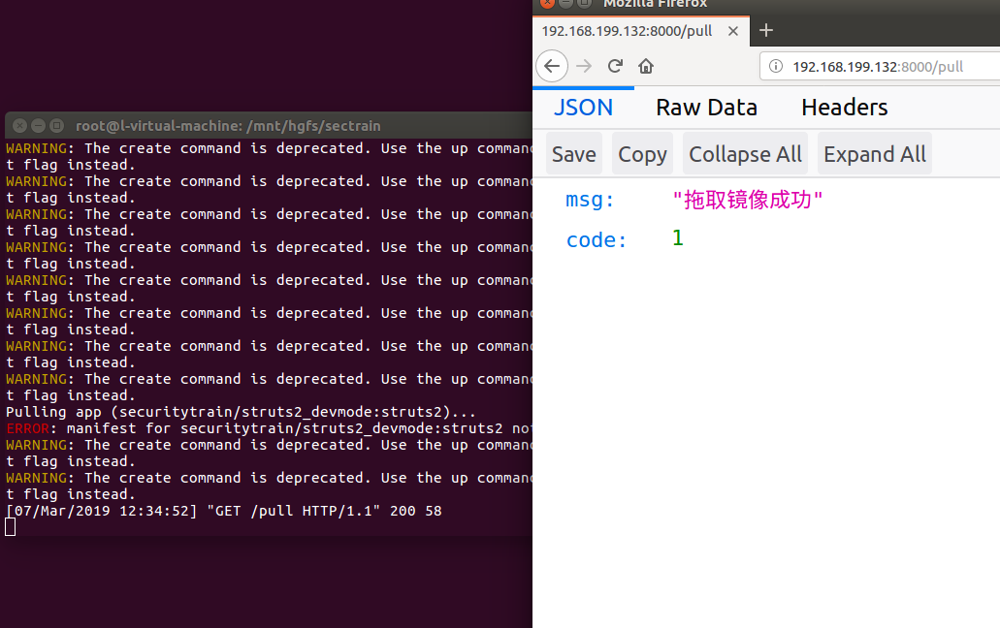对于环境的栏目，我是使用docker的tag进行区分，或许可能进行更细的区分
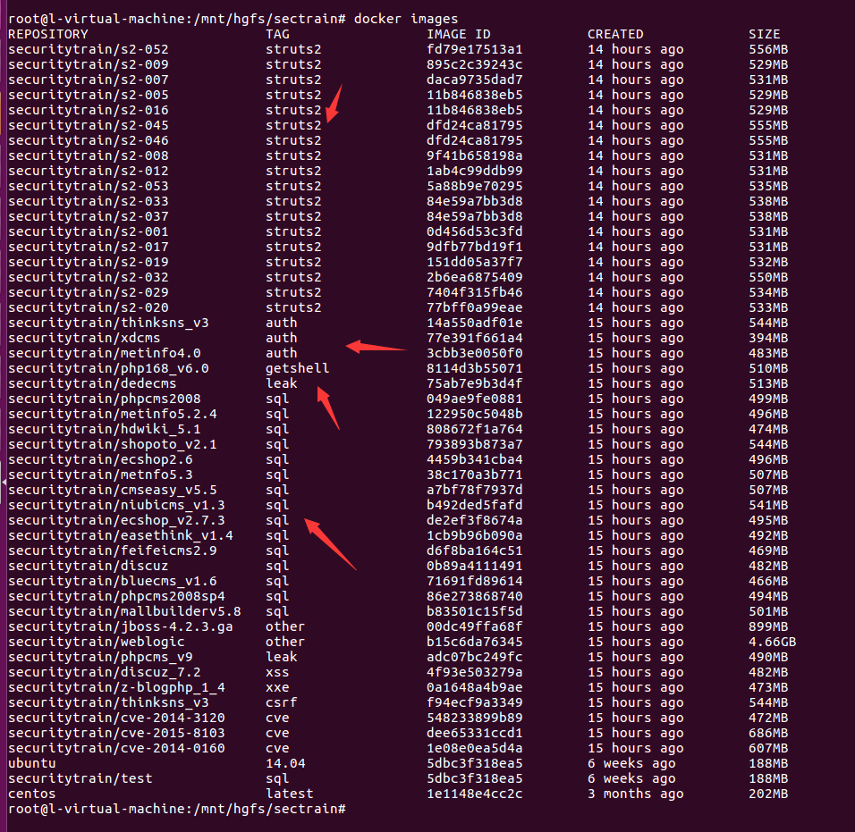启动镜像，可以显示对外端口和状态
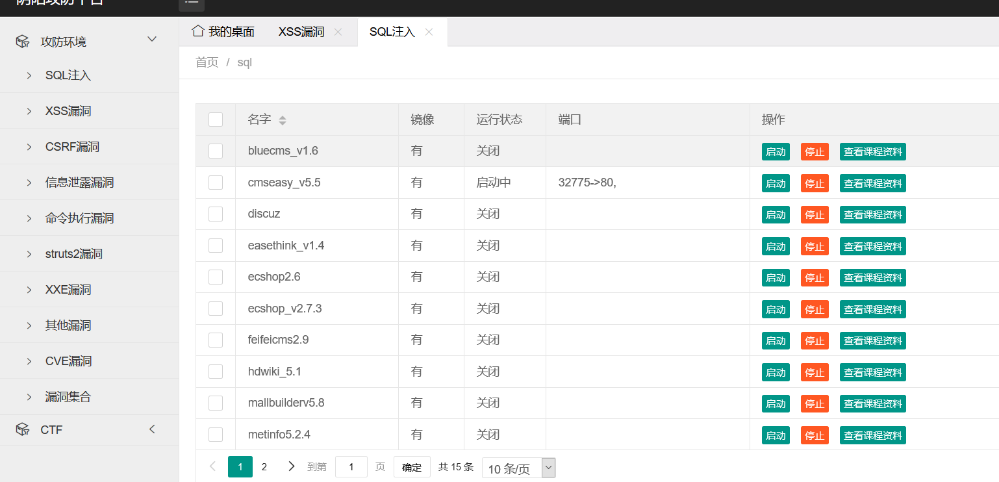
使用markdown写下课程，然后后台对其解析（虽然有点丑，但是也就这样把=-=没那精力学前端）
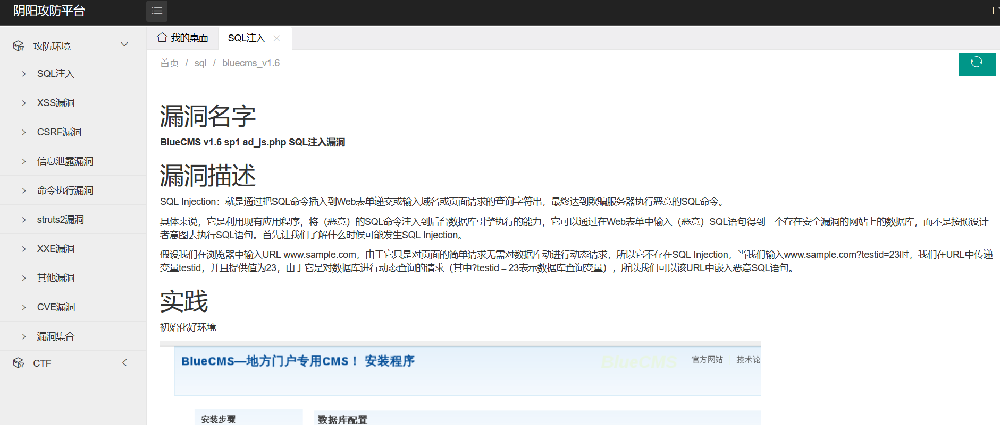
我当时思考过，当这玩意部署到外网，那么需要对其进行控制防御，于是我写了两道关卡
第一道就是控制用户启动镜像的次数，假如要是让用户无限制启动，服务器就直接炸了，所以我写了个判断该用户启动的次数，默认是一次，这里可以进行修改
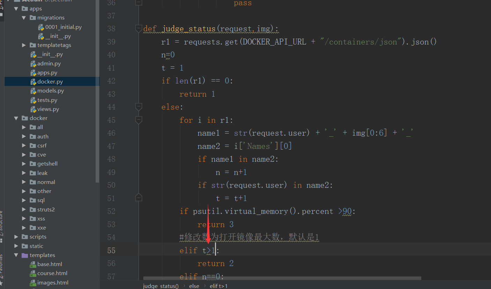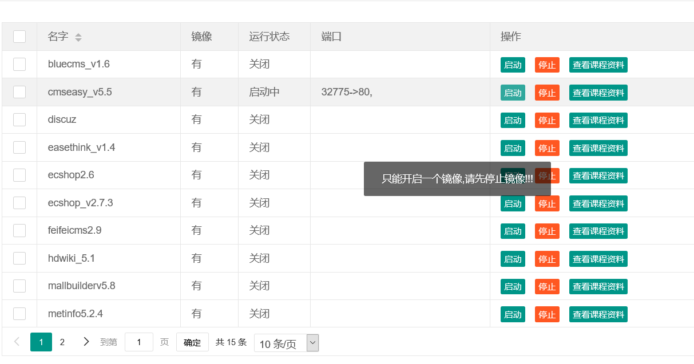第二道关卡就有意思
由于docker启动端口的是 docker run -it -p 80:80 ubuntu:14.04,没有进行端口控制，也就是当我部署在外网的时候，我可以访问其他人的靶机，也可以D别人的靶机，所以我就想到使用防火墙进行限制。
当启动镜像的时候，在防火墙那里添加规则
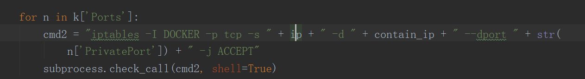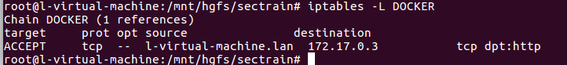主要是docker port命令不支持限制外网的机器，不然就会报错。
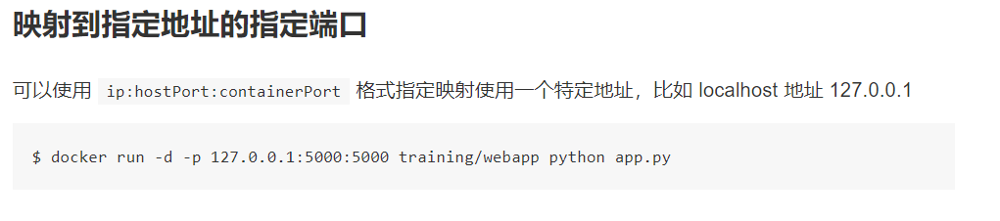
docker run -p 10.10.10.10:80:80 ubuntu:14.04
docker: Error response from daemon: driver failed programming external connectivity on endpoint loving_lederberg (382503bd4520c928edd392c58144a710c6d5a19b15410799f005ad61a4fcc41e): Error starting userland proxy: listen tcp 10.10.10.10:80: bind: cannot assign requested address.其实还有一道隐藏的关卡，就是控制内存，当内存使用率超过90%，任何用户都启动不了镜像(感觉这是一个作死的关卡，哈哈哈哈~)
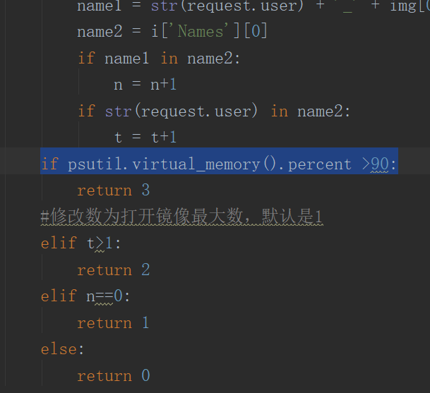
当然，这个系统还有很多有意思的功能还没有写，例如自己弄个CTF靶场，然后一堆人进行演练和刷分，不过感觉网上有的是CTF靶场，这想法就被搁置了，不想花时间造轮子，还不如好好提升技术。不过过段时间也可以搞些入侵分析的靶机，进行演练。
下面是真正展示这个平台的使用
启动系统之前，需要创建一个账号
python3 manage.py createsuperuser
然后才可以启动，因为我做了用户认证
python3 manage.py runserver 0.0.0.0:8000
然后进入到首页就可以看到系统的状态
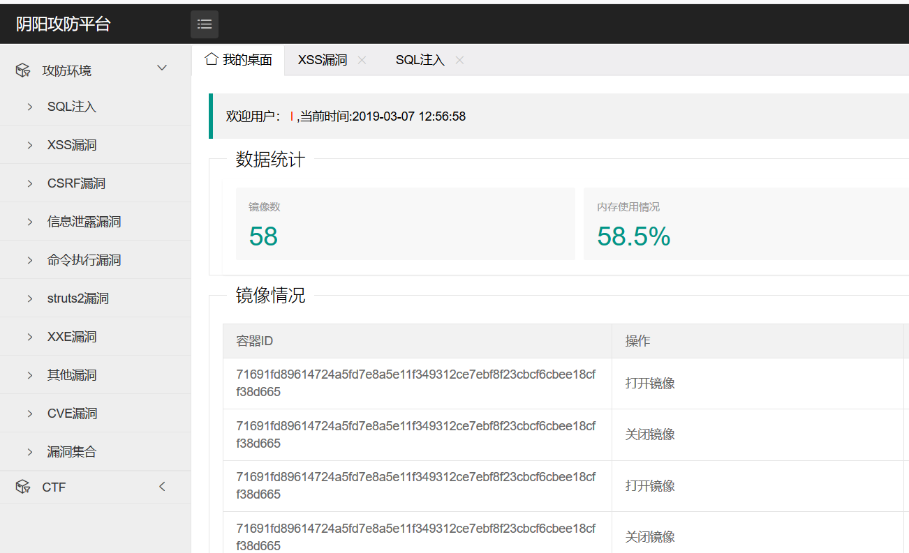找一个struts2的漏洞来演练一波，启动镜像，在浏览器打开IP:PORT
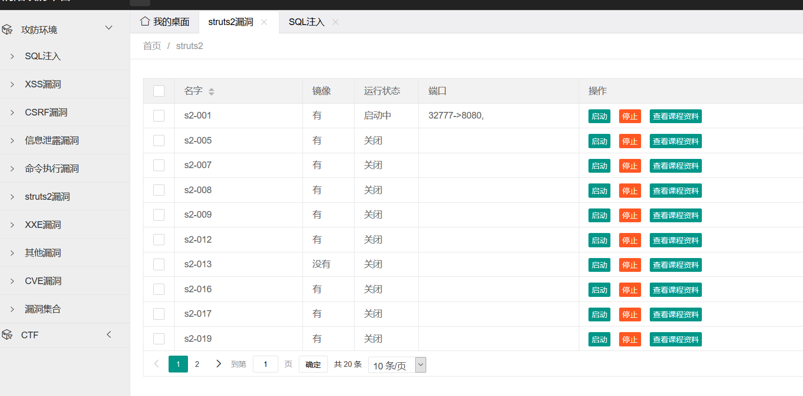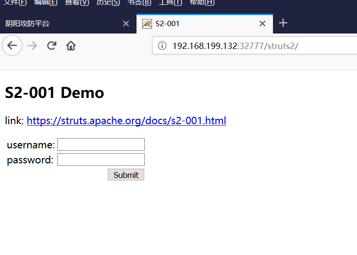然后查看课程资料，就可以按照教程去做，不要说我短，不是，是教程短，实在我没有这么多精力，一个一个做得好。
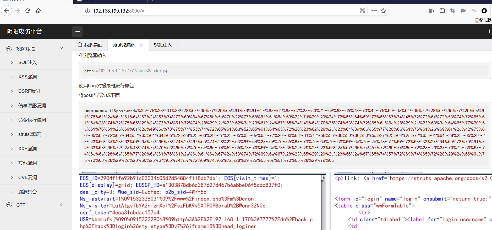感觉也就介绍的差不多了。然后有人会问你这个跟vulhub和vulapp有什么区别吗？
肯定有啊，起码这样好操作=-=而且我可以去他那边偷取镜像(,,・ω・,,)
不过如果有人有兴趣跟我一起弄靶机镜像，可以私信我，咱们一起搞一波。